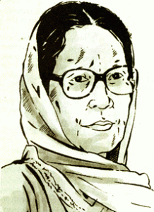

Parijat was a Nepalese writer. Her real name was Bishnu Kumari Waiba but she wrote under the pen name Parijat. Her most acclaimed publication is Shiris ko Phool (The Blue Mimosa), which has also been adapted in the literature curriculum of some colleges in some English-speaking countries like United States, Englinad etc. Some of the notable universities where Parijat's Shiris Ko Phool was adopted as currriculam in the University of Maryland, USA. She was born in 1937 in the hill station of Darjeeling. Parijat was the first women to open up vioce of Nepalese women to the outer world. She was highly influenced by the Nepali literature during her childhood period as Darjeeling was the major center of Nepali language, culture and literature. She has played a significant role in strengthening the Nepali literature. Parijat completed part of her schooling in Darjeeling and in 1954, she came to Kathmandu and joined Padma Kanya School. She completed her bachelor of Arts degree but was struck by paralysis at an early age of 26, after which she was depended on her sister for the rest of her life. Her first poem was published by Dharti. She published three poetry collections, Akansha, Parijat ka Kavita and Baisalu Bartaman.Maile Najanmayeko choro (the son I did not give birth to) was her first short story. She is best known for her novels and among the ten novels she penned, Shiris Ko Phool (The Blue Mimosa) became a masterpeice of Nepali literature. She received Madan Puraskar in 1965 for the novel and was also awarded the Sarwashrestha Pandulipi Puraskar, Gandaki Basundhara Puraskar and Bridabrit.